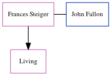

Isaac Stuple 1799 - 1870
[ Home ] | [ Calendar ] | [ Surnames Index ] | [ Errors ] | [ Family History ]The child of Richard Stuple and Elizabeth Eason, Isaac Stuple, the 3 times great-grandfather of Nigel Horne, was born in Herne, Kent, England in 17991,2,3, was baptised there on 2 May 1800 and also married Ann Mount (with whom he had 5 children: Abraham, Thomas, Jane, James and Emily) there on 13 Oct 1830.
During his life, he was living at his birthplace in 18511 and in 18612.
He died in Apr/May/Jun 1870 in Herne Bay, Kent, England3.
Parents
- Elizabeth was born in 1759
Children
- Abraham was born c. 1827
- Thomas was born c. 1831
- Jane was born c. 1833
- James was born c. May 1838
- Emily was born c. 1846
Citations
- 1851 England Census Online publication - Provo, UT, USA: The Generations Network, Inc., 2005.Original data - Census Returns of England and Wales, 1851. Kew, Surrey, England: The National Archives of the UK (TNA): Public Record Office (PRO), 1851. Data imaged from the National
- 1861 England Census Online publication - Provo, UT, USA: The Generations Network, Inc., 2005.Original data - Census Returns of England and Wales, 1861. Kew, Surrey, England: The National Archives of the UK (TNA): Public Record Office (PRO), 1861. Data imaged from the National
- England & Wales, FreeBMD Death Index: 1837-1915 Online publication - Provo, UT, USA: The Generations Network, Inc., 2006.Original data - General Register Office. England and Wales Civil Registration Indexes. London, England: General Register Office. © Crown copyright. Published by permission of the Cont
Family Tree
Map
Generated by ged2site. Last updated on Jul 3, 2024
Known Issues
Marriage date (13 Oct 1830) has no citations